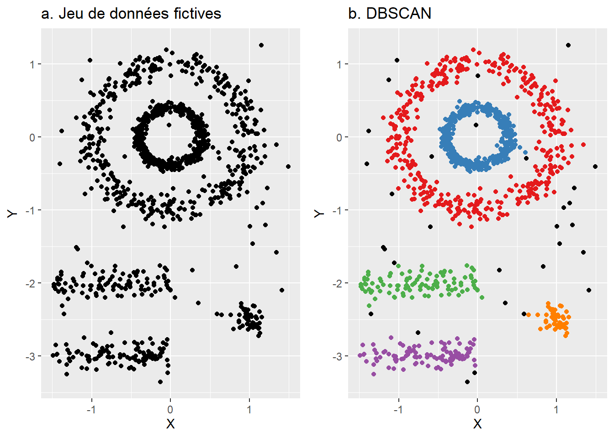
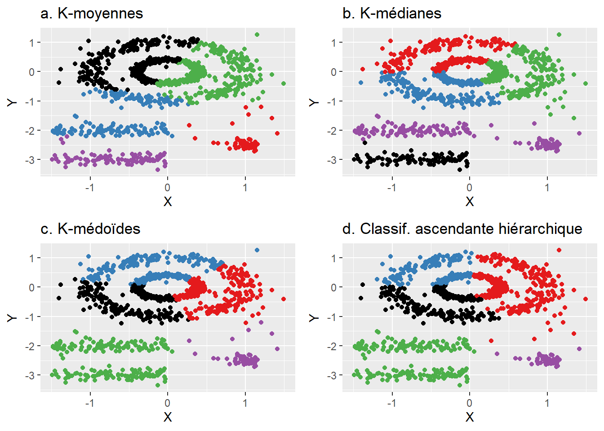
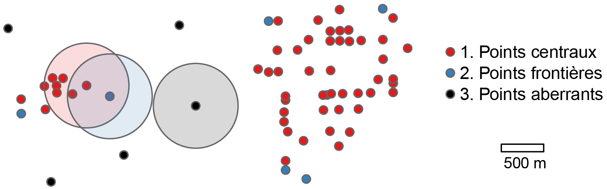
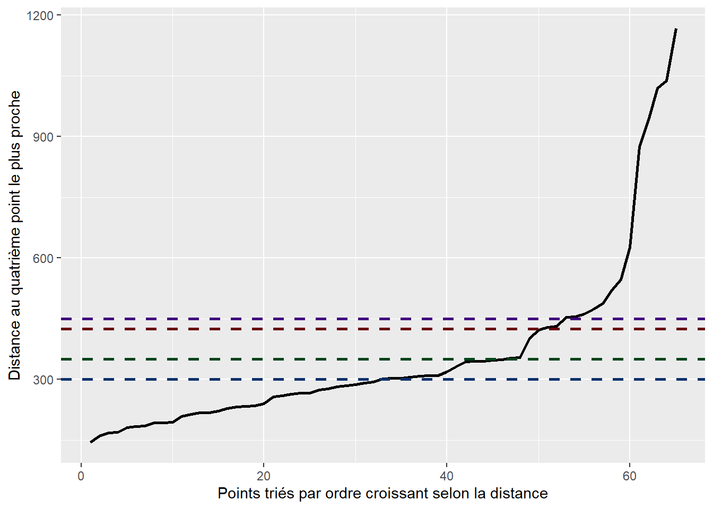
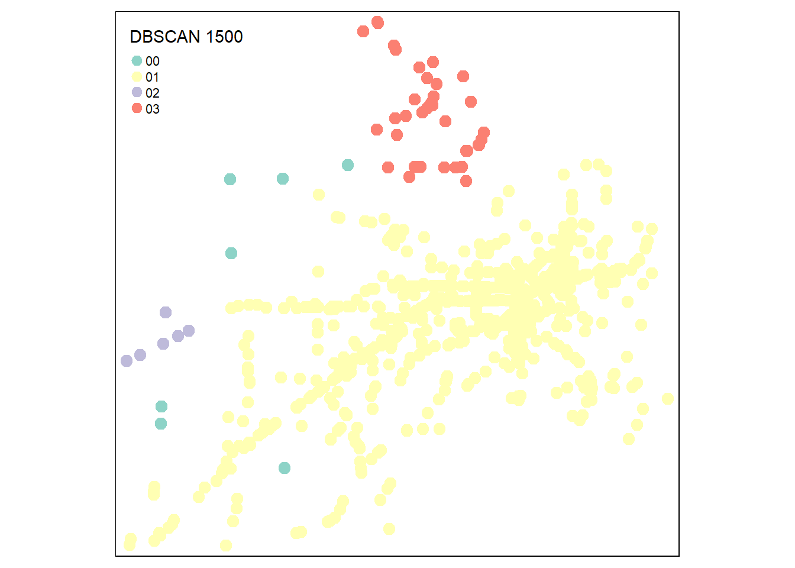
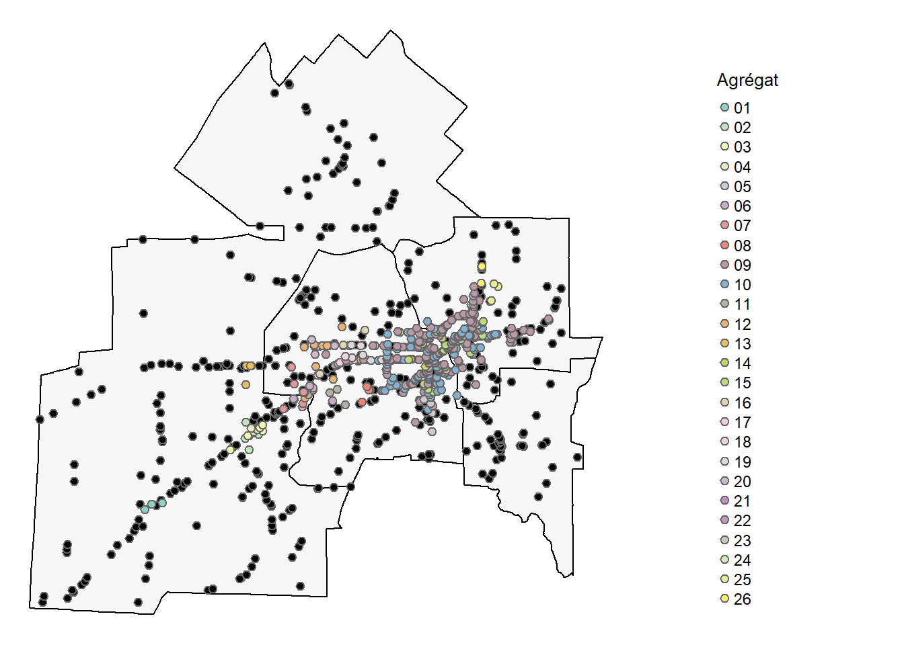

4 Méthodes de détection d’agrégats spatiaux et spatio-temporels
Dans ce chapitre, nous abordons deux familles de méthodes de détection d’agrégats spatiaux et spatio-temporels qui s’appliquent à des géométries différentes : les méthodes de classification basées sur la densité des points (couche de points), principalement les algorithmes DBSCAN (Ester et al. 1996) et ST-DBSCAN (Birant et Kut 2007), et les méthodes de balayage de Kulldorff (1997) (couche polygonale).
Liste des packages utilisés dans ce chapitre
- Pour importer et manipuler des fichiers géographiques :
-
sfpour importer et manipuler des données vectorielles. -
dplyrpour manipuler les données.
-
- Pour construire des cartes et des graphiques :
-
tmappour les cartes. -
ggplot2pour construire des graphiques.
-
-
dbscanpour l’algorithme DBSCAN. -
SpatialEpipour les méthodes de balayage de Kurlldoff.
4.1 Agrégats d’entités spatiales ponctuelles
4.1.1 DBSCAN : agrégats spatiaux
Pourquoi utiliser DBSCAN ?
Dans le chapitre précédent, portant sur les méthodes de répartition ponctuelles, nous avons abordé la méthode KDE permettant de cartographier la densité de points dans une maille régulière (section 3.4.2). La carte de chaleur obtenue avec la KDE représente les valeurs de densité (variable continue) pour les pixels couvrant le territoire à l’étude.
Avec l’algorithme DBSCAN (Ester et al. 1996), l’objectif est différent : il s’agit d’identifier des agrégats spatiaux d’évènements ponctuels dans un territoire donné (par exemple, des cas de maladies, d’accidents, d’espèces fauniques ou végétales, de crimes, etc.). Autrement dit, il s’agit d’identifier plusieurs régions du territoire à l’étude dans lesquelles la densité de points est forte.
Concrètement, si la méthode KDE renvoie une variable continue pour l’ensemble du territoire, l’algorithme DBSCAN renvoie une variable qualitative uniquement pour les points du jeu de données.
4.1.1.1 Fonctionnement de DBSCAN
DBSCAN (Density-Based Spatial Clustering of Applications with Noise) est un algorithme de classification non supervisée qui regroupe des observations en fonction de leur densité dans un espace à deux, trois ou n dimensions (Ester et al. 1996). Comme pour toute autre méthode de classification non supervisée, ces dimensions sont des variables. Par conséquent, en appliquant DBSCAN sur les coordonnées géographiques d’entités ponctuelles 2D (x, y) ou 3D (x, y, z), nous classifions les points du jeu de données.
Prenons un jeu de données fictives (figure 4.1, a). À l’œil nu, nous identifions clairement cinq régions distinctes avec une forte densité de points et des zones de faible densité; ces dernières étant représentées par les points noirs avec DBSCAN (figure 4.1, b).
L’intérêt majeur de l’algorithme DBSCAN est qu’il est basé sur la densité des points et non sur la distance entre les points comme les algorithmes classiques de classification non supervisée que sont les k-moyennes, k-médianes, k-médoïdes ou la classification ascendante hiérarchique. Tel qu’illustré à la figure 4.2, l’utilisation de la distance pour identifier cinq groupes de points renvoie des résultats peu convaincants. D’une part, tous les points appartiennent à une classe, sans séparer les régions de fortes et de faibles densités. D’autre part, les algorithmes classiques basés sur la distance ne parviennent pas à bien identifier les deux agrégats circulaires (bleu et rouge à la figure 4.1, b) et parfois linéaires (vert et mauve à la figure 4.1, b).

L’algorithme DBSCAN comprend deux paramètres qui doivent être définis par la personne utilisatrice :
Le rayon de recherche, dénommé \(\epsilon\) (epsilon), habituellement basé sur la distance euclidienne. Les distances de Manhattan ou réticulaires peuvent aussi être utilisées.
Le nombre minimum de points, dénommé \(MinPts\), requis pour qu’un point, incluant lui-même, soit considéré comme un point central et appartienne à un agrégat, un regroupement (cluster en anglais).
Avantage de DBSCAN : nul besoin de spécifier le nombre d’agrégats (clusters)!
Comparativement à d’autres méthodes de classification non supervisées comme les k-moyennes, k-médianes et k-médoïdes, DBSCAN ne requiert pas de spécifier le nombre de classes à identifier dans le jeu de données. Autrement dit, appliqué à des géométries ponctuelles, l’algorithme DBSCAN détecte autant d’agrégats spatiaux que nécessaire en fonction des valeurs des deux paramètres (\(\epsilon\) et \(MinPts\)).
À la figure 4.3, nous appliquons l’algorithme DBSCAN à un semis de points avec un rayon de recherche de 500 mètres (\(\epsilon=500\)) et un nombre minimum de cinq points (\(MinPts = 5\)). Dans un premier temps, l’algorithme distingue trois types de points :
- Des points centraux (core points en anglais) qui ont au moins cinq points (incluant eux-mêmes) dans un rayon de 500 mètres (points rouges).
- Des points frontières (border points) qui ont moins de cinq points (incluant eux-mêmes) dans un rayon de 500 mètres, mais qui sont inclus dans la zone tampon de 500 mètres d’un point central (points bleus).
- Des points aberrants (noise points) qui ont moins de cinq points (incluant eux-mêmes) dans un rayon de 500 mètres et qui ne sont pas inclus dans la zone tampon d’un point central (points noirs).

Par la suite, les étapes de l’algorithme sont les suivantes :
-
Étape 1. Formation du premier agrégat
Nous tirons au hasard un point central et l’assignons au premier agrégat (groupe ou cluster).
Puis, les points compris dans la zone tampon du premier point central sont ajoutés à ce premier agrégat.
De façon itérative, nous étendons l’agrégat avec les points centraux ou frontières qui sont compris dans les zones tampons des points ajoutés précédemment.
-
Étape 2. Formation d’autres agrégats
Lorsque le premier agrégat est complété, nous tirons au hasard un autre point central n’appartenant pas au premier agrégat.
Nous appliquons la même démarche qu’à l’étape 1 pour étendre et compléter cet autre agrégat.
Les deux sous-étapes ci-dessus sont répétées jusqu’à ce que tous les points centraux et frontières soient assignés à un agrégat.
Nous obtenons ainsi k agrégats (valeurs de 1 à k) tandis que les points aberrants sont affectés à la même classe (valeur de 0 habituellement). Appliqué au semis de points, DBSCAN a détecté deux agrégats et quatre points aberrants (figure 4.4).

4.1.1.2 Sensibilité et optimisation des paramètres de DBSCAN
Les résultats de l’algorithme de DBSCAN varient en fonction de ses deux paramètres, soit le rayon de recherche (\(\epsilon\)) et le nombre minimum de points (\(MinPts\)).
Concernant le paramètre \(\epsilon\), plus sa valeur est réduite, plus le nombre de points identifiés comme aberrants est important. Inversement, plus elle est grande, plus le nombre d’agrégats diminue. En guise d’illustration, faisons varier la valeur du rayon en maintenant à cinq le nombre minimum de points :
Avec un rayon de 250 mètres, cinq agrégats sont identifiés tandis que 29 points sont considérés comme du bruit (figure 4.5, a).
Avec un rayon de 500 mètres, la solution est plus optimale avec deux agrégats et cinq points aberrants (figure 4.5, b).
Avec un rayon de 1000 mètres, deux agrégats sont aussi identifiés. Par contre, il ne reste plus qu’un point aberrant. Par conséquent, quatre points qui, à l’œil nu, sont très éloignés d’un agrégat y sont pourtant affectés (figure 4.5, c).
Avec un rayon de 1500 mètres, tous les points sont affectés à un et un seul agrégat (figure 4.5, d).

Concernant le paramètre \(MinPts\), plusieurs stratégies ont été proposées pour fixer sa valeur :
- \(MinPts \geq dim(D) + 1\), c’est-à-dire que sa valeur doit être minimalement égale au nombre de dimensions (variables) plus un du jeu de données.
- \(MinPts = dim(D) \times 2\), c’est-à-dire que le nombre de points devrait être égal à deux fois le nombre de dimensions du tableau (Sander et al. 1998).
- \(MinPts = 4\) quand le jeu de données ne comprend que deux dimensions (Ester et al. 1996), soit un critère qui s’applique à des géométries ponctuelles 2D.
Après avoir fixé le nombre minimal de points, nous pouvons optimiser la valeur du rayon de recherche de la façon suivante :
Pour chacun des points, calculer la distance au kième point le plus proche.
Trier les valeurs obtenues pour construire un graphique en courbe.
Dans ce graphique, utiliser le critère du coude pour repérer la ou les valeurs signalant un décrochement dans la courbe. À la lecture de la figure 4.6, les valeurs d’epsilon (\(\epsilon\)) à retenir pourraient être 300, 350, 425 et 450 mètres.

Si vous repérez plusieurs seuils de distance dans le graphique des distances au kième plus proche voisin, réalisez et comparez les résultats des DBSCAN avec ces valeurs d’epsilon. À la figure 4.7, nous constatons que les résultats avec des seuils de 425 et 450 mètres sont identiques et semblent optimaux. Par contre, la solution avec un rayon de 350 mètres identifie deux points aberrants qui pourraient être intégrés au deuxième agrégat tandis que celle avec un rayon de 300 mètres identifie un agrégat supplémentaire, mais classifie de nombreux points comme aberrants.
Quel résultat choisir parmi les quatre solutions?
Comme pour toute analyse de classification, votre choix peut être objectif et reposer uniquement sur des indicateurs statistiques (ici, le graphique des distances au k plus proche voisin). Il devrait aussi s’appuyer sur vos connaissances du terrain. Par exemple, l’identification d’un troisième agrégat avec une valeur d’epsilon fixée à 300 mètres pourrait refléter selon vous une réalité terrain particulièrement intéressante qui motiverait fortement le choix de cette solution.

Autres algorithmes de classification non supervisée basée sur la densité
Bien que DBSCAN soit l’algorithme le plus utilisé, d’autres algorithmes basés sur la densité peuvent être utilisés pour détecter des agrégats spatiaux de points, notamment :
HDBSCAN (Hierarchical Density-Based Spatial Clustering of Applications with Noise) (Campello, Moulavi et Sander 2013). Brièvement, cette version modifiée de DBSCAN permet d’obtenir une hiérarchie de partitions, comme dans une classification ascendante hiérarchique.
OPTICS (Ordering Points To Identify the Clustering Structure) (Campello, Moulavi et Sander 2013). Avec OPTICS, la distance de voisinage (\(\epsilon\)) n’a pas besoin d’être spécifiée. Succinctement, pour chaque point du jeu de données, il utilise la distance au \(k\) (\(MinPts\)) plus proche voisin.
Application à des évènements localisés sur un réseau de rues
Lorsque les évènements sont localisés sur un réseau de rues (des accidents par exemple), il convient d’utiliser une autre métrique que la distance euclidienne pour le rayon de recherche (\(\epsilon\)), soit la distance du chemin le plus court à travers le réseau de rues, ce que nous verrons au chapitre suivant (section 6.4). Geoff Boeing a aussi proposé un un code Python basé sur la librairie OSMnx.
4.1.2 ST-DBSCAN : agrégats spatio-temporels
Derya Birant et Alp Kut (2007) ont proposé une modification de l’algorithme de DBSCAN afin qu’il puisse s’appliquer à des données spatio-temporelles (\(x\), \(y\), \(d\)) avec \(d\) étant la date de l’évènement. Dénommé ST-DBSCAN, l’algorithme comprend toujours les deux paramètres de DBSCAN (\(MinPts\) et \(\epsilon\)), auxquels s’ajoute un autre paramètre \(\epsilon\) pour le temps (défini en heure, jour, semaine, mois ou année). Autrement dit, deux paramètres de distance sont utilisés : \(\epsilon_1\) pour la proximité spatiale (comme avec DBSCAN) et \(\epsilon_2\) pour la proximité temporelle (Birant et Kut 2007). De la sorte, deux points sont considérés comme voisins si la distance spatiale et la distance temporelle sont toutes deux inférieures aux seuils fixés.
Fenêtre temporelle des points formant un agrégat
Attention, les points formant un agrégat peuvent avoir une fenêtre temporelle bien plus grande que le seuil \(\epsilon_2\) fixé. Par exemple, fixons les valeurs de \(\epsilon_1\) à 500 mètres et de \(\epsilon_2\) à 7 jours. Si le point A (\(d\) = 2023-01-15) est distant de 400 mètres du point B (\(d\) = 2023-01-20), les deux points sont considérés comme voisins. Par contre, si le point B est distant du point C (\(d\) = 2023-01-25) de moins de 500 mètres, il peut être aussi agrégé à l’agrégat puisque l’écart temporel entre B et C est de 5 jours.
Habituellement, plus la valeur de \(\epsilon_2\) est faible, plus le nombre de points considérés comme aberrants est important.
4.1.3 Mise en œuvre dans R
4.1.3.1 DBSCAN
Nous utilisons le package dbscan (Hahsler et Piekenbrock 2022; Hahsler, Piekenbrock et Doran 2019) dans lequel sont implémentés plusieurs algorithmes, dont DBSCAN, mais aussi OPTICS et HDBSCAN. La fonction dbscan(x, eps, minPts, weights = NULL) comprend plusieurs paramètres :
-
x: une matrice, un DataFrame, un objetdistou un objetfrNN. -
eps: le rayon de recherche epsilon (\(\epsilon\)). -
minPts: le nombre de points minimum requis pour que chaque point soit considéré comme un point central. -
weights: un vecteur numérique optionnel pour pondérer les points.
Pour illustrer le fonctionnement de la méthode DBSCAN, nous avons extrait les accidents d’un jeu de données sur les incidents de sécurité publique survenus sur le territoire de la Ville de Sherbrooke de juillet 2019 à juin 2022 (figure 4.8).
Dans le code ci-dessous, nous réalisons trois étapes préalables au calcul de DBSCAN :
- Importation des accidents.
- Récupération des coordonnées (\(x\), \(y\)) des accidents et stockage dans une matrice.
- Construction du graphique à partir de la distance au quatrième point le plus proche.
Nous n’observons pas de décrochement particulier dans la courbe de la figure 4.9. Par conséquent, nous pourrions tout aussi bien retenir une distance euclidienne de 250, 500, 1000 ou 1500 mètres pour epsilon.
library(sf)
library(tmap)
library(dbscan)
library(ggplot2)
## Importation des accidents
Accidents.sf <- st_read(dsn = "data/chap04/DataAccidentsSherb.shp", quiet=TRUE)
## Coordonnées géographiques
xy <- st_coordinates(Accidents.sf)
## Graphique pour la distance au quatrième voisin le plus proche
DistKplusproche <- kNNdist(xy, k = 4)
DistKplusproche <- as.data.frame(sort(DistKplusproche, decreasing = FALSE))
names(DistKplusproche) <- "distance"
ggplot(data = DistKplusproche)+
geom_path(aes(x = 1:nrow(DistKplusproche), y = distance), size=1)+
labs(x = "Points triés par ordre croissant selon la distance",
y = "Distance au quatrième point le plus proche")+
geom_hline(yintercept=250, color = "#08306b", linetype="dashed", size=1)+
geom_hline(yintercept=500, color = "#00441b", linetype="dashed", size=1)+
geom_hline(yintercept=1000, color = "#67000d", linetype="dashed", size=1)+
geom_hline(yintercept=1500, color = "#3f007d", linetype="dashed", size=1)Appliquons la méthode DBSCAN avec un minimum de quatre points et les quatre valeurs de distance euclidienne.
set.seed(123456789)
## DBSCAN avec les quatre distances
dbscan250 <- dbscan(xy, eps = 250, minPts = 4)
dbscan500 <- dbscan(xy, eps = 500, minPts = 4)
dbscan1000 <- dbscan(xy, eps = 1000, minPts = 4)
dbscan1500 <- dbscan(xy, eps = 1500, minPts = 4)
## Affichage des résultats
dbscan250DBSCAN clustering for 1106 objects.
Parameters: eps = 250, minPts = 4
Using euclidean distances and borderpoints = TRUE
The clustering contains 45 cluster(s) and 353 noise points.
0 1 2 3 4 5 6 7 8 9 10 11 12 13 14 15 16 17 18 19
353 4 6 7 5 15 5 4 22 7 5 5 19 295 4 18 5 4 7 8
20 21 22 23 24 25 26 27 28 29 30 31 32 33 34 35 36 37 38 39
4 6 49 4 11 4 4 41 5 4 8 31 25 10 6 23 4 5 18 15
40 41 42 43 44 45
6 4 6 4 7 4
Available fields: cluster, eps, minPts, dist, borderPointsdbscan500DBSCAN clustering for 1106 objects.
Parameters: eps = 500, minPts = 4
Using euclidean distances and borderpoints = TRUE
The clustering contains 33 cluster(s) and 143 noise points.
0 1 2 3 4 5 6 7 8 9 10 11 12 13 14 15 16 17 18 19
143 7 6 14 4 5 5 4 6 734 18 8 6 6 5 9 16 9 5 4
20 21 22 23 24 25 26 27 28 29 30 31 32 33
23 5 3 4 6 5 4 9 6 9 4 4 4 6
Available fields: cluster, eps, minPts, dist, borderPointsdbscan1000DBSCAN clustering for 1106 objects.
Parameters: eps = 1000, minPts = 4
Using euclidean distances and borderpoints = TRUE
The clustering contains 10 cluster(s) and 42 noise points.
0 1 2 3 4 5 6 7 8 9 10
42 8 6 37 962 8 4 6 5 12 16
Available fields: cluster, eps, minPts, dist, borderPointsdbscan1500DBSCAN clustering for 1106 objects.
Parameters: eps = 1500, minPts = 4
Using euclidean distances and borderpoints = TRUE
The clustering contains 3 cluster(s) and 7 noise points.
0 1 2 3
7 1047 12 40
Available fields: cluster, eps, minPts, dist, borderPointsPour les 1106 accidents du jeu de données, les résultats des quatre DBSCAN ci-dessus sont les suivants :
- Avec \(\epsilon = 250\), 45 agrégats et 353 points aberrants (bruit).
- Avec \(\epsilon = 500\), 33 agrégats et 143 points aberrants.
- Avec \(\epsilon = 1000\), 10 agrégats et 42 points aberrants.
- Avec \(\epsilon = 1500\), 3 agrégats et 7 points aberrants.
Pour les n points du jeu de données, l’appartenance à un agrégat est enregistrée dans un vecteur numérique avec des valeurs de 0 à k agrégats (ResultatDbscan$cluster). Notez que la valeur de 0 est attribuée aux points aberrants. Avec ce vecteur, nous enregistrons les résultats dans un nouveau champ de la couche de points sf.
## Enregistrement des résultats de DBSCAN dans la couche de points sf
Accidents.sf$Dbscan250 <- as.character(dbscan250$cluster)
Accidents.sf$Dbscan500 <- as.character(dbscan500$cluster)
Accidents.sf$Dbscan1000 <- as.character(dbscan1000$cluster)
Accidents.sf$Dbscan1500 <- as.character(dbscan1500$cluster)
Accidents.sf$Dbscan250 <- ifelse(nchar(Accidents.sf$Dbscan250) == 1,
paste0("0", Accidents.sf$Dbscan250),
Accidents.sf$Dbscan250)
Accidents.sf$Dbscan500 <- ifelse(nchar(Accidents.sf$Dbscan500) == 1,
paste0("0", Accidents.sf$Dbscan500),
Accidents.sf$Dbscan500)
Accidents.sf$Dbscan1000 <- ifelse(nchar(Accidents.sf$Dbscan1000) == 1,
paste0("0", Accidents.sf$Dbscan1000),
Accidents.sf$Dbscan1000)
Accidents.sf$Dbscan1500 <- ifelse(nchar(Accidents.sf$Dbscan1500) == 1,
paste0("0", Accidents.sf$Dbscan1500),
Accidents.sf$Dbscan1500)Nous cartographions finalement les résultats pour les quatre solutions.

4.1.3.2 ST-DBSCAN
Pour l’algorithme ST-DBSCAN, nous utilisons une fonction R proposée par Colin Kerouanton.
source("code_complementaire/stdbscan.R")Calculons ST-DBSCAN avec une distance spatiale de 1000 mètres et une distance temporelle de 21 jours. Nous obtenons 26 agrégats et 584 points identifiés comme aberrants.
## Importation des accidents
Accidents.sf <- st_read(dsn = "data/chap04/DataAccidentsSherb.shp", quiet=TRUE)
## Coordonnées géographiques
xy <- st_coordinates(Accidents.sf)
Accidents.sf$x <- xy[,1]
Accidents.sf$y <- xy[,2]
## Vérifions que le champ DATEINCIDE est bien au format date
str(Accidents.sf$DATEINCIDE) Date[1:1106], format: "2021-12-11" "2022-05-16" "2021-08-12" "2019-08-02" "2020-03-02" ...## Calcul de st-dbscan avec une distance de 1000 mètres et 21 jours
Resultats.stdbscan <- stdbscan(x = Accidents.sf$x,
y = Accidents.sf$y,
time = Accidents.sf$DATEINCIDE,
eps1 = 1000,
eps2 = 21,
minpts = 4)
## Enregistrement des résultats de ST-DBSCAN dans la couche de points sf
Accidents.sf$stdbscan.1000_21 <- as.character(Resultats.stdbscan$cluster)
Accidents.sf$stdbscan.1000_21 <- ifelse(nchar(Accidents.sf$stdbscan.1000_21) == 1,
paste0("0", Accidents.sf$stdbscan.1000_21),
Accidents.sf$stdbscan.1000_21)
## Nombre de points par agrégat
table(Accidents.sf$stdbscan.1000_21)
00 01 02 03 04 05 06 07 08 09 10 11 12 13 14 15 16 17 18 19
584 4 6 5 4 4 7 7 4 178 156 13 17 4 22 32 6 7 8 8
20 21 22 23 24 25 26
5 6 4 3 5 4 3 Pour faciliter l’analyse des résultats de ST-DBSCAN, nous conseillons de :
- Construire un tableau récapitulatif pour les agrégats avec le nombre de points, les dates de début et de fin et l’intervalle temporel.
- Construire un graphique avec les agrégats (axe des y) et la dimension temporelle (axe des x).
- Cartographier les résultats.
Le code ci-dessous génère le tableau récapitulatif. Nous constatons ainsi que les agrégats 9 et 10 incluent respectivement 178 et 156 points avec des intervalles temporels importants (respectivement 251 et 319 jours).
library(dplyr)
## Sélection des points appartenant à un agrégat
Agregats <- subset(Accidents.sf,
Accidents.sf$stdbscan.1000_21 != "00")
## Conversion de la date au format POSIXct
Agregats$dtPOSIXct <- as.POSIXct(Agregats$DATEINCIDE, format = "%Y/%m/%d")
## Tableau récapitulatif
library("dplyr")
Tableau.stdbscan <-
st_drop_geometry(Agregats) %>%
group_by(stdbscan.1000_21) %>%
summarize(points = n(),
date.min = min(DATEINCIDE),
date.max = max(DATEINCIDE),
intervalle.jours = as.numeric(max(DATEINCIDE)-min(DATEINCIDE)))
## Affichage du tableau
print(Tableau.stdbscan, n = nrow(Tableau.stdbscan))# A tibble: 26 × 5
stdbscan.1000_21 points date.min date.max intervalle.jours
<chr> <int> <date> <date> <dbl>
1 01 4 2019-08-08 2019-09-04 27
2 02 6 2021-12-15 2022-01-25 41
3 03 5 2019-07-21 2019-08-30 40
4 04 4 2020-11-10 2020-12-12 32
5 05 4 2022-01-08 2022-02-13 36
6 06 7 2021-06-09 2021-07-02 23
7 07 7 2020-06-23 2020-08-07 45
8 08 4 2021-09-30 2021-10-27 27
9 09 178 2019-07-02 2020-03-09 251
10 10 156 2021-03-13 2022-01-26 319
11 11 13 2021-07-24 2021-09-11 49
12 12 17 2021-10-21 2022-01-12 83
13 13 4 2021-06-16 2021-07-07 21
14 14 22 2022-04-11 2022-06-27 77
15 15 32 2020-09-11 2020-12-18 98
16 16 6 2020-01-17 2020-02-08 22
17 17 7 2022-05-07 2022-05-30 23
18 18 8 2021-04-01 2021-05-27 56
19 19 8 2020-07-15 2020-09-11 58
20 20 5 2019-07-05 2019-07-31 26
21 21 6 2022-01-15 2022-03-02 46
22 22 4 2020-06-17 2020-06-30 13
23 23 3 2022-03-12 2022-03-18 6
24 24 5 2021-06-29 2021-07-21 22
25 25 4 2021-09-20 2021-10-25 35
26 26 3 2021-04-13 2021-04-26 13La figure 4.10 présente les points et l’étendue temporelle de chaque agrégat.
## Construction du graphique
ggplot(Agregats) +
geom_point(aes(x = dtPOSIXct,
y = stdbscan.1000_21,
color = stdbscan.1000_21),
show.legend = FALSE) +
scale_x_datetime(date_labels = "%Y/%m")+
labs(x= "Temps",
y= "Identifiant de l'agrégat",
title = "ST-DBSCAN avec Esp1 = 1000, Esp2 = 21 et MinPts = 4")La cartographie des agrégats est présentée à la figure 4.11 avec en noir les points aberrants.
## Création de deux couches : l'une pour les agrégats, l'autre pour les points aberrants
stdbcan.Agregats <- subset(Accidents.sf, Accidents.sf$stdbscan.1000_21 != "00")
stdbcan.Bruit <- subset(Accidents.sf, Accidents.sf$stdbscan.1000_21 == "00")
## Cartographie
tmap_mode("plot")
tm_shape(Arrondiss)+tm_fill(col="#f7f7f7")+tm_borders(col="black")+
tm_shape(stdbcan.Bruit)+
tm_dots(shape = 21, col="black", size=.2)+
tm_shape(stdbcan.Agregats)+
tm_dots(shape = 21, col="stdbscan.1000_21", size=.2, title = "Agrégat")+
tm_layout(frame = FALSE, legend.position = c("center", "bottom"),
legend.text.size = .85, legend.outside = TRUE)
4.2 Méthodes de balayage de Kulldorff
4.2.1 Objectifs de la méthode, types d’analyses, de modèles et d’agrégats
4.2.2 Principes de base de la méthode
4.2.2.1 Type de balayage (cercle ou ellipse)
4.2.2.2 Variable de contrôle
4.2.3 Mise en œuvre dans R
4.2.3.1 Agrégats temporels, spatiaux et spatio-temporels
4.2.3.2 Introduction de variables de contrôle
4.2.3.3 Exploration d’autres types de modèles
4.3 Quiz de révision du chapitre
Avec l’algorithme DBSCAN, vous devez spécifier le nombre de groupes (agrégats).
Relisez au besoin la section 4.1.1.1.
Quels sont les trois types de points identifiés par DBSCAN?
Relisez au besoin l’encadré à la section 4.1.1.1.
Plus la valeur d’epsilon est grande, plus le nombre d’agrégats diminue.
Relisez au besoin la section 4.1.1.2.
4.4 Exercices de révision
Exercice 1. Application de l’algorithme DBSCAN
L’objectif est d’appliquer cet algorithme sur des accidents impliquant des personnes à vélo sur l’île de Montréal (voir la section 4.1.3.1). Ces données ouvertes sur les collisions routières et leur documentation sont disponibles au lien suivant.
library(sf)
library(tmap)
library(dbscan)
library(ggplot2)
## Importation des données
Collissions <- st_read(dsn = "data/chap04/collisions.gpkg",
layer = "CollisionsRoutieres",
quiet = TRUE)
## Collisions impliquant au moins une personne à vélo en 2020 et 2021
Coll.Velo <- subset(Collissions,
Collissions$NB_VICTIMES_VELO > 0 &
Collissions$AN %in% c(2020, 2021))
## Coordonnées géographiques
xy <- st_coordinates(Coll.Velo)
## Graphique pour la distance au quatrième voisin le plus proche
DistKplusproche <- kNNdist(xy, k = 4)
DistKplusproche <- as.data.frame(sort(DistKplusproche, decreasing = FALSE))
names(DistKplusproche) <- "distance"
ggplot(à compléter)+
geom_path(à compléter)+
labs(à compléter)+
geom_hline(yintercept=250, color = "#08306b", linetype="dashed", size=1)+
geom_hline(yintercept=500, color = "#00441b", linetype="dashed", size=1)+
geom_hline(yintercept=1000, color = "#67000d", linetype="dashed", size=1)
## DBSCAN avec les quatre distances
set.seed(123456789)
dbscan250 <- à compléter
dbscan500 <- à compléter
dbscan1000 <- à compléter
## Affichage des résultats
dbscan250
dbscan500
dbscan1000
## Enregistrement dans la couche de points sf Coll.Velo
Coll.Velo$dbscan250 <- à compléter
Coll.Velo$dbscan500 <- à compléter
Coll.Velo$dbscan1000 <- à compléter
Coll.Velo$dbscan250 <- ifelse(nchar(Coll.Velo$dbscan250) == 1,
paste0("0", Coll.Velo$dbscan250),
Coll.Velo$dbscan250)
Coll.Velo$dbscan500 <- ifelse(nchar(Coll.Velo$dbscan500) == 1,
paste0("0", Coll.Velo$dbscan500),
Coll.Velo$dbscan500)
Coll.Velo$dbscan1000 <- ifelse(nchar(Coll.Velo$dbscan1000) == 1,
paste0("0", Coll.Velo$dbscan1000),
Coll.Velo$dbscan1000)
# Extraction des agrégats
Agregats.dbscan250 <- subset(Coll.Velo, dbscan250 != "00")
Agregats.dbscan500 <- subset(Coll.Velo, dbscan500 != "00")
Agregats.dbscan1000 <- subset(Coll.Velo, dbscan1000 != "00")
## Cartographie
tmap_mode("plot")
à compléterCorrection à la section 9.4.1.
Exercice 2. Application de l’algorithme ST-DBSCAN
Avec le même jeu de données, réaliser un ST-DBSCAN avec les paramètres suivants : distance spatiale de 500 mètres, distance temporelle de 30 jours et quatre points minimum (voir la section 4.1.3.2).
library(sf)
library(tmap)
library(dbscan)
library(ggplot2)
## Importation des données
Collissions <- st_read(dsn = "data/chap04/collisions.gpkg",
layer = "CollisionsRoutieres",
quiet = TRUE)
## Collisions impliquant au moins une personne à vélo en 2020 et 2021
Coll.Velo <- subset(Collissions,
Collissions$NB_VICTIMES_VELO > 0 &
Collissions$AN %in% c(2020, 2021))
## Coordonnées géographiques
xy <- st_coordinates(Coll.Velo)
Coll.Velo$x <- xy[,1]
Coll.Velo$y <- xy[,2]
## Conversion du champ DT_ACCDN au format Date
Coll.Velo$DT_ACCDN <- as.Date(Coll.Velo$DT_ACCDN)
## ST-DBSCAN avec eps1 = 500, esp2 = 30 et minpts = 4
Resultats.stdbscan <- stdbscan(À compléter)
## Enregistrement des résultats ST-DBSCAN dans la couche de points sf
Coll.Velo$stdbscan <- as.character(Resultats.stdbscan$cluster)
Coll.Velo$stdbscan <- ifelse(nchar(Coll.Velo$stdbscan) == 1,
paste0("0", Coll.Velo$stdbscan),
Coll.Velo$stdbscan)
## Nombre de points par agrégat avec la fonction table
table(Coll.Velo$stdbscan)
## Sélection des points appartenant à un agrégat avec la fonction subset
Agregats <- subset(Coll.Velo, stdbscan != "00")
## Conversion de la date au format POSIXct
Agregats$dtPOSIXct <- as.POSIXct(Agregats$DT_ACCDN, format = "%Y/%m/%d")
## Tableau récapitulatif
library("dplyr")
Tableau.stdbscan <- À compléter
## Affichage du tableau
print(Tableau.stdbscan, n = nrow(Tableau.stdbscan))
## Construction du graphique
À compléter
## Création d'une couche pour les agrégats
stdbcan.Agregats <- subset(Coll.Velo, stdbscan != "00")
## Cartographie
À compléterCorrection à la section 9.4.2.